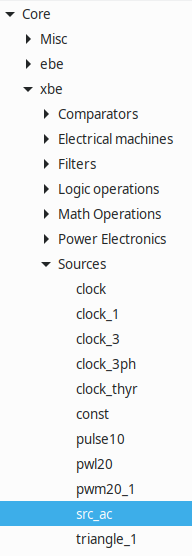
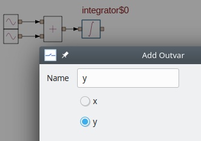
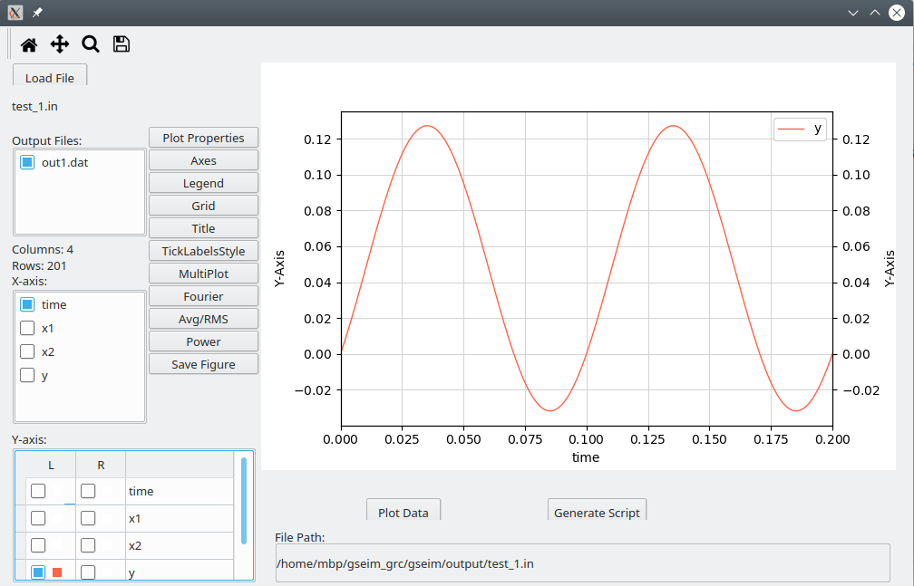

Creating a new project¶
It is assumed that the user has successfully installed GSEIM on a linux computer. In this section, we will see how to make up a new GSEIM project, simulate it, and view the simulation results.
Example 1¶
Consider the ODE given by
This ODE can be implemented with a GSEIM schematic by rewriting it as
In the following, a step-by-step procedure is given to implement the above equations with a schematic diagram and obtain the simulation results. Note that this is a rather simple ODE for which the analytic solution can be easily found and compared with the numerical solution given by GSEIM.
Start a new project. A canvas with an
Optionsblock will appear. Double-click on the options block, and setIdandTitle. Note that Id should only contain letters, digits, and the underscore character. In theGenerate optionsfield, chooseCircuitto indicate that this schematic diagram is for a complete stand-alone circuit (system) and not a hierarchical block.The next step is to bring in the required elements (blocks) from the library. We need two
src_ac(sinusoidal source) elements for \(x_1\) and \(x_2\), asum_2element and anintegrator. To bringsrc_acinto the canvas, select it from the library, and drag it into the canvas. (Instead of navigating the block tree panel, one can also use theSearch for a block by namebutton in the menu bar.)Place the components, keeping in mind the connections you will need to make.
Next, we need to set the properties (parameter values) for each of the elements. In this example, the parameters for
sum_2andintegratorare not required to be changed (from their default values). For thesrc_acelements, we need to set the amplitude, frequency, and phase. Double-click on the element of interest, and edit its parameter values. For thesrc_acelement corresponding to \(x_1\), the parametersa,f_hz,phi_degshould be set to 4, 10, and 90, respectively. For the other source, they should be set to 3, 10, and 0, respectively.
(Note that it is also possible to add comments about a block using the
Advacnedtab in thePropertieswindow.)Connect the elements as required. To make a connection between two ports, click on one of the ports and then on the other.
We now want to indicate to the simulator which variables it should save (and make available for plotting). These output variables are of two types:
Node value: This is the value of the variable represented by a node (wire). To select a node value as an output variable, left-click on that wire, and it will appear in a different colour as shown below.

Now, right click on the wire and select
Add to outvars. A box which appears which describes the node as a connection between node x of element xx and node y of element yy. Give a suitable name to this output variable, as shown below.
Output parameter of an element: For each element, a few output parameters are declared in the library. To select an output parameter of a specific element, first select the element with left-click, and then right-click and select
Add to outvars. The output parameters available for that element will appear. For example, for theintegrator, the following dialog box will be displayed. Selectyand give a suitable name to the corresponding output variable.
The next step is to set simulation parameters such as time step, choice of numerical method, etc. This is done by preparing one or more
solve blocks. In most cases, including the present example, we only need one solve block.To begin with, we need to add a new solve block. Click on
SolveBlocks\(\rightarrow\)Add Solve Block. A dialog box for a new solve block appears as shown below. Choose a suitable name for this solve block. Theindexof this block can keep its default value.
We have now added a solve block called
S1(0).Next, we edit the properties of the solve block
S1(0). Click onSolveBlocks\(\rightarrow\)Edit Solve Block. A dialog box with several parameters appears. For the present example, we only need to set the following.- numerical method: We can choose Runge-Kutta order 4 (RK4), for example.
t_startandt_end, the starting and ending times for the simulation- the time step
tstep0_x

Note that
tstep0_xcan be assigned by clicking ontime_step_xand then selectingtstep0_x.We now need to prepare an
output blockto inform the simulator about what data files should be created and which variables should be stored in each of them. For this purpose, we first need to add an output block. Click onOutputBlocks\(\rightarrow\)Add Output Block. The following dialog box appears.
Each output block is associated with a parent solve block. In this case, there is only one solve block, so there is no need to exercise any choice.
Edit the output block added in the previous step by clicking on
OutputBlocks\(\rightarrow\)Edit Output Block. The following dialog box appears.
Note that the output variables listed in this box are those declared earlier. Select the output variables of interest, and assign a name to the output file (which will be created by this output block).
You are now ready to simulate the system. Save the project file in the directory of your choice, naming it
test_1.grc(wheretest_1is the value we assigned toIdin theOptionsblock). Click onGenerate circuit file, thenRun simulation. At this stage, the data file specified in your output block would be created in the directory~/gseim_grc/gseim/output/. Click onView results. The plotting GUI will appear in a separate window. Click onLoad Fileand select~/gseim_grc/gseim/output/test_1.in. After that, select the x and y variables as shown in the following figure to view \(y(t)\).
{kind=link}
{kind=link}
{kind=link}
{kind=link}
{kind=link}
{kind=link}
Example 2¶
We now consider an electrical circuit example, the RC circuit shown below.
The blocks required are r, c, vsrc_clock, and ground. We will
simulate the circuit for \(8\,{\textrm{msec}}\) and plot the current \(i(t)\)
and the capacitor voltage \(V_c(t)\).
{kind=link}
Here are the steps to be followed.
Bring in the required blocks into the canvas.
Select the capacitor and rotate it clockwise through \(90^{\circ}\) using the
Rotate CW 90 degbutton in the menu bar.Place the blocks suitably. As discussed in the Blocks and ports section, connectors are often useful in making the wiring neater. Bring in
connector_e_3, rotate it, and place it near the ground as shown below.The next step is wiring. The procedure is the same as that followed in Example 1.
In the interest of a more compact schematic, the ground block can be moved to obtain the following. (This is purely a cosmetic step and can be skipped.)
Next, assign the following parameter values:
r:r = 1k(i.e., \(1\,{\textrm{k}}\Omega\))c:c = 1u(i.e., \(1\,\mu{\textrm{F}}\))vsrc_clock:T1 = 0.5mT2 = 0.5mL1 = 0L2 = 5delta1 = 0.02mdelta2 = 0.02m
The block parameter values can be (optionally) displayed on the canvas by selecting the block by left-clicking \(\rightarrow\) right click \(\rightarrow\)
Show parameter\(\rightarrow\) select desired parameter. The parameter value – in reality, ashow_parameterblock – appears next to the selected block. Theshow_parameterblock can be moved around like any other block.Output variables: For electrical circuits, using the
Add to outvarsoption for a wire creates an output variable of type node voltage (i.e., voltage of that node with respect to ground). For the RC circuit, we can define the following output variables:v_s: This can be either the node voltage of the wire connecting the source and the resistor or the outvarvof the source.v_c: This can be either the node voltage of the wire connecting the resistor and the capacitor or the outvarvof the capacitor.i: This can be selected as theioutvar of either the resistor or the capacitor.
The following figure shows one way of assigning the output variables.
Solve block: For simulation of electrical circuits, GSEIM allows only implicits methods. In this example, we will select the backward Euler method and simulate the circuit for \(8\,{\textrm{msec}}\) with a time step of \(0.02\,{\textrm{msec}}\) by making the following assignments:
solve_type:trnsalgorithm_e:backward_eulert_end:8mtime_step_x\(\rightarrow\)tstep0_e:0.02m
Create an output block as shown below.
In the
Optionsblock, make these assignments:Id:test_2Title: RC Circuit
Save the file as
test_2.grcin the directory of your choice.Generate circuit file\(\rightarrow\)Run simulation\(\rightarrow\)View resultsSelect
~/gseim_grc/gseim/output/test_2.inin the plotting GUI and plotv_sandv_c. You should see the following plot.If we want to view the current
iand the capacitor voltagev_csimultaneously, there is a problem:iis of the order of \(10^{-3}\) whereasv_cis of the order of \(10^0\), and the current will show up as zero. There are two options to circumvent this situation.
{kind=link}
{kind=link}
{kind=link}
{kind=link}
{kind=link}
{kind=link}
{kind=link}
{kind=link}
{kind=link}
{kind=link}
{kind=link}
Example 3¶
We will now simulate the buck converter shown below.
{kind=link}
It differs from the RC circuit in the last example in two aspects:
- It is nonlinear (because of the diode).
- It involves both flow-graph elements (the gate signal source) and electrical elements.
GSEIM uses the Newton-Raphson (N-R) method for nonlinear electrical circuits, and therefore solve block parameters related to the N-R method need to be assigned appropriately. This is the main difference with respect to the RC circuit. The steps involved in simulating the buck converter are given below.
Bring in the blocks
r,l,c,diode_r,switch_1,vsrc_dc,clock_1,ground, and connectors. Place the blocks and wire the circuit.Assign the parameter values as follows. Note that
diode_randswitch_1are idealised components with resistancer_onwhen conducting andr_offwhen not conducting. In addition,switch_1has a parameterx_highwhich indicates what value of the input variable (of type flow-graph) should be interpreted as high.r:r = 50c:c = 100u(i.e., \(100\,\mu{\textrm{F}}\))l:l = 600u(i.e., \(600\,\mu{\textrm{H}}\))vsrc_dc:vdc = 50diode_r:r_on = 1m,r_off = 10M(m for milli, M for mega)switch_1:r_on = 1m,r_off = 10M,x_high = 1clock_1:f_hz = 25k(i.e., 25 kHz)D = 0.6(duty cycle)y_high = 1delta1 = 0.1udelta2 = 0.1u
Use the
Show parameteroption to display the salient component values. The circuit would look like this:Select the inductor current and resistor voltage as output variables; name them as
ILandv_out, respectively.Add a solve block and make the following assignments. (Note that
_exin a solve block parameter name indicates that it is related to a circuit involving bothebeandxbeelements.)solve_type = trnsalgorithm_ex = backward_eulert_end = 40mtime_step_ex\(\rightarrow\)tstep0_ex:0.2ue_nr:e_nr_spice_vntol = 1e-4e_nr_spice_abstol = 1e-6e_nr_spice_reltol = 1e-3
The
vntol,abstol, andreltolparameters have to do with SPICE convergence criteria, described in the section on numerical methods.Add an output block and add
ILandv_outto its list of variables.In the
Optionsblock, setIdtobuck,Titletobuck converter, save the project asbuck.grc(in a directory of your choice).Generate circuit file\(\rightarrow\)Run simulation\(\rightarrow\)View resultsThe
v_outversus time plot is shown below. The circuit takes about \(35\,{\textrm{msec}}\) to reach the steady state.
{kind=link}
{kind=link}
If we are only interested in the steady-state behaviour of the circuit, the transient simulation approach has two drawbacks:
- The number of cycles required to reach the steady state can be substantially large. In our examples, it is about \(35\times 10^{-3}/40\times 10^{-6}\) or 875 cycles. However, we are interested in just one cycle in the steady state. Clearly, the transient simulation approach is wasteful in terms of simulation time.
- With the transient simulation approach, it is not know a priori how long the circuit would take to reach the steady state, thus entailing a trial-and-error loop.
GSEIM provides a way to directly compute the steady-state solution, without having to go through a (possibly long) transient. This option is called Steady-State Waveform (SSW) and is the same as that implemented in SEQUEL.
We can try out the SSW option for the buck converter example by making the following assignments in the solve block already created.
solve_type = sswSSW\(\rightarrow\)ssw_frequency:25kThe
ssw_frequencyparameter is used by GSEIM to find the period \(T\). Alternatively, we could have setssw_period = 40u.
Doing
Generate circuit file
\(\rightarrow\)
Run simulation
\(\rightarrow\)
View results
once again, and selecting IL for plotting, we get the following
plot.
{kind=link}
If the inductance value is changed to 200u, we get discontinuous
inductor current as shown below.
{kind=link}